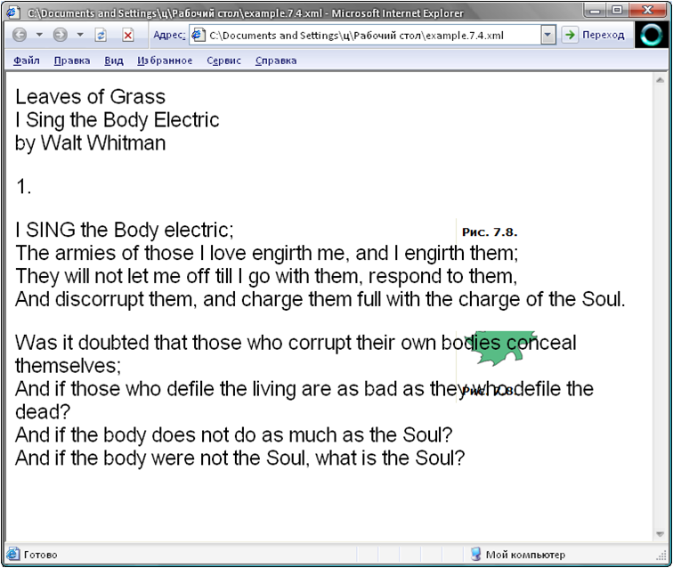

Лекция №7
Отображение
XML-документов с использованием таблиц каскадных стилей
В этой лекции вы познакомитесь с
первым из методов отображения XML-документов в браузере Microsoft Internet
Explorer 5, рассматриваемых в этом курсе: таблицах каскадных стилей (CSS).
Таблица каскадных стилей представляет собой файл, который содержит инструкции
для форматирования элементов в XML-документе.
Поскольку в XML вы создаете свои
собственные элементы, браузер не имеет встроенных средств, позволяющих
определить, как их правильно отобразить. Создание таблицы каскадных стилей и
связывание ее с вашим XML-документом – это один из способов сообщить браузеру,
как отображать каждый из элементов документа. XML-документ со связанной таблицей
каскадных стилей может быть открыт непосредственно в Internet Explorer 5. Вам
нет необходимости использовать HTML-страницу для доступа и отображения
данных.
Хранение инструкций по отображению
в таблице стилей отдельно от самого XML-документа повышает гибкость
XML-документа и облегчает работу с ним. Вы можете, например, быстро адаптировать
один XML-документ к различным условиям отображения простым присоединением
соответствующей таблицы стилей, без необходимости реструктурировать сам
документ. Вы также можете быстро обновить формат для группы сходных
XML-документов с помощью внесения изменений в присоединенной к этим документам
таблице стилей, не открывая и не редактируя каждый из документов.
Использование таблицы стилей,
наверное, является самым простым методом отображения XML-документа. Язык CSS уже
знаком многим Web-дизайнерам, поскольку именно он в настоящее время используется
для HTML-страниц. Кроме того, современные Web-браузеры обеспечивают высокий
уровень поддержки таблиц каскадных стилей, в то время как другие методы
отображения XML все еще находятся в стадии развития, и браузеры только начинают
их поддерживать.
Тем не менее, по сравнению с
другими методами отображения XML, о которых вы узнаете в последующих лекциях,
таблицы каскадных стилей имеют ряд ограничений. Хотя таблица каскадных стилей
предоставляет достаточно высокий уровень управляемости способами, которыми
браузер форматирует содержимое элементов в XML-документах, она не дает
возможности модифицировать или реорганизовывать его содержимое. Она также не
позволяет вам осуществлять доступ к атрибутам, примитивам, инструкциям по
обработке и другим компонентам XML – а также не дает возможности обрабатывать
информацию, которую эти компоненты содержат.
В последующих лекциях вы
познакомитесь с более сложными – но и более гибкими – способами отображения
XML-документов. В лекции 8 вы узнаете, как связывать XML-документ с
HTML-страницей и отображать XML-элементы путем сцепления с ними стандартных
HTML-элементов.
Примечание. В
этой лекции раскрывается большинство свойств CSS, поддерживаемых Internet
Explorer 5, которые являются частью оригинальной версии CSS, установленной
консорциумом World Wide Web (W3C) и известной как Cascading Style Sheets Level
1, или CSS1. Консорциум W3C также определил усовершенствованную версию CSS,
которая значительно превосходит версию CSS1, известную как Cascading Style
Sheets Level 2, или CSS2. CSS2 только частично поддерживается современными
браузерами и не рассматривается в этом курсе. Полную спецификацию W3C для CSS1
вы можете найти по адресу http://www.w3.org/TR/REC-CSS1, а спецификацию для CSS2
– по адресу http://www.w3.org/TR/REC-CSS2
Основные
этапы при использовании таблицы каскадных стилей
Вот два основных этапа при
использовании таблицы каскадных стилей для отображения
XML-документа:
-
создание файла таблицы
стилей;
-
связывание таблицы стилей с
XML-документом.
Шаг первый: создание
файла таблицы стилей.
Таблица каскадных стилей
представляет собой текстовый файл, обычно с расширением .css, который содержит
набор правил, сообщающих браузеру, каким образом форматировать и отображать
элементы в определенном XML-документе. Как и XML-документ, вы можете создавать
таблицу стилей с помощью вашего любимого текстового редактора. Листинг 7.1
содержит пример простой таблицы каскадных стилей.
Листинг 7.1. Inventory01.css
/*
File Name: Inventory01.css */
BOOK
{display:block;
margin-top:12pt;
font-size:10pt}
TITLE
{font-style:italic}
AUTHOR
{font-weight:bold}
Эта таблица стилей предназначена
для присоединения к XML-документу, представленному в Листинге 7.2. Листинг 7.2
используется и в других примерах в данной лекции, поэтому вам придется не раз к
нему обращаться.
Листинг 7.2. Inventory01.xml
<?xml version="1.0"?>
<!-- File Name: Inventory01.xml -->
<?xml-stylesheet type="text/css"
href="Inventory01.css"?>
<INVENTORY>
<BOOK>
<TITLE>The Adventures of Huckleberry
Finn</TITLE>
<AUTHOR>Mark Twain</AUTHOR>
<BINDING>mass market
paperback</BINDING>
<PAGES>298</PAGES>
<PRICE>$5.49</PRICE>
</BOOK>
<BOOK>
<TITLE>Leaves of Grass</TITLE>
<AUTHOR>Walt Whitman</AUTHOR>
<BINDING>hardcover</BINDING>
<PAGES>462</PAGES>
<PRICE>$7.75</PRICE>
</BOOK>
<BOOK>
<TITLE>The Legend of Sleepy
Hollow</TITLE>
<AUTHOR>Washington Irving</AUTHOR>
<BINDING>mass market
paperback</BINDING>
<PAGES>98</PAGES>
<PRICE>$2.95</PRICE>
</BOOK>
<BOOK>
<TITLE>The Marble Faun</TITLE>
<AUTHOR>Nathaniel Hawthorne</AUTHOR>
<BINDING>trade paperback</BINDING>
<PAGES>473</PAGES>
<PRICE>$10.95</PRICE>
</BOOK>
<BOOK>
<TITLE>Moby-Dick</TITLE>
<AUTHOR>Herman Melville</AUTHOR>
<BINDING>hardcover</BINDING>
<PAGES>724</PAGES>
<PRICE>$9.95</PRICE>
</BOOK>
<BOOK>
<TITLE>The Portrait of a Lady</TITLE>
<AUTHOR>Henry James</AUTHOR>
<BINDING>mass market
paperback</BINDING>
<PAGES>256</PAGES>
<PRICE>$4.95</PRICE>
</BOOK>
<BOOK>
<TITLE>The Scarlet Letter</TITLE>
<AUTHOR>Nathaniel Hawthorne</AUTHOR>
<BINDING>trade paperback</BINDING>
<PAGES>253</PAGES>
<PRICE>$4.25</PRICE>
</BOOK>
<BOOK>
<TITLE>The Turn of the Screw</TITLE>
<AUTHOR>Henry James</AUTHOR>
<BINDING>trade paperback</BINDING>
<PAGES>384</PAGES>
<PRICE>$3.35</PRICE>
</BOOK>
</INVENTORY>
Примечание.
Пример таблицы стилей в Листинге 7.1 и пример XML-документа в Листинге 7.2
являются копиями файлов, которые вы создали в упражнении «Отобразите
XML-документ с использованием таблицы каскадных стилей» в лекции
2.
Таблица стилей состоит из одного
или нескольких правил. Правило содержит информацию по отображению определенного
типа элемента в XML-документе. На рисунке 7.1 представлено правило для элементов
BOOK с указанием его составных частей.
Рис. 7.1.
Селектор представляет собой имя
типа элемента, к которому относится информация по
отображению.
За селектором следует блок
объявлений, который ограничивается фигурными скобками ({}) и содержит одно или
несколько объявлений, разделяемых точкой с запятой.
Каждое объявление задает установку
определенного свойства, такого как размер шрифта, который будет использован для
отображения элемента. Объявление состоит из свойства, вслед за которым идет
двоеточие, после которого следует значение для данного свойства. Например,
следующее объявление устанавливает для свойства font-size (размер шрифта)
значение 10pt (10 пунктов) (см. рисунок 7.2).

Рис. 7.2.
Таблица стилей может также
содержать комментарии. Комментарии в таблице стилей начинаются с символов косой
черты и звездочки (/*) и заканчиваются символами звездочки и косой черты (*/).
Между этими парами символов-ограничителей вы можете поместить любой текст по
вашему желанию. Когда браузер прочитывает таблицу стилей для форматирования
документа, он игнорирует этот текст. Вы можете использовать комментарий для
пояснений, указания назначения и действия таблицы стилей. В качестве примера
можно привести комментарий в начале таблицы стилей из Листинга 7.1:
/* Имя файла: Inventory01.css
*/
Вы также можете использовать
комментарии в процессе разработки таблицы стилей, чтобы временно отключить
правило или его часть. Например, если вы хотите посмотреть, как будут выглядеть
элементы BOOK без верхней отбивки, то можете временно добавить символы
комментариев в следующее правило:
BOOK
{display:block;
/*
margin-top:12pt; */
font-size:10pt}
Примечание.
Пустые символы (пробелы, табуляция, пропуск строки) отделяют различные
компоненты CSS, такие как индивидуальные объявления в блоке объявлений. Способ
использования пропусков в данном курсе является лишь одной из возможностей. Вы
можете использовать пропуски любым способом, чтобы лучше организовать содержимое
и придать большую ясность вашим собственным таблицам стилей. Например, вы можете
поместить все объявления, относящиеся к правилу, в одну строку, вместо того,
чтобы размещать каждое из них на отдельной строке. Пример таблицы стилей,
представленной в Листинге 7.1, содержит
следующие объявления:
-
display:block. Помещает
пустую строку перед и после текста элемента;
-
margin-top:12pt. Добавляет
верхнее поле (отбивку) высотой в 12 пт к тексту элемента;
-
font-size:10pt. Устанавливает
размер шрифта, используемого для отображения текста элемента, в 10
пунктов;
-
font-style:italic. Отображает
текст элемента курсивом;
-
font-weight:bold. Отображает
текст элемента полужирным.
На рисунке 7.3 показано как
Internet Explorer 5 отображает XML-документ, который использует данную таблицу
стилей в соответствии с инструкциями, содержащимися в этих
объявлениях.
Рис. 7.3.
Набор свойств, используемых в
таблицах каскадных стилей, похож на набор свойств, которые вы можете применять в
текстовом процессоре. Далее в этой лекции вы познакомитесь с различными
свойствами, которые можете применять, а также со значениями, которые вы можете
присваивать определенным свойствам.
Нечувствительность к регистру в
CSS
В Internet Explorer 5 таблицы
каскадных стилей являются нечувствительными к регистру, в котором набраны
символы. То есть, когда Internet Explorer 5 обрабатывает таблицу стилей, он
игнорирует регистр букв (строчные или прописные). Например, вы можете набрать
следующее правило любым из трех приведенных ниже способов:
title
{font-style:italic}
Title
{FONT-STYLE:Italic}
title
{Font-Style:ITALIC}
Нечувствительность к регистру в
таблицах каскадных стилей имеет важное значение. Поскольку XML-документы
являются чувствительными к регистру, вы вполне можете иметь два различных типа
элемента, имена которых отличаются лишь регистром букв, например, Book и BOOK. В
таблице каскадных стилей, однако, эти два имени будут отнесены к одному и тому
же типу элемента, и вы не сможете назначить им различную установку свойств.
Следовательно, если вы предполагаете отображать ваш XML-документ с
использованием таблицы каскадных стилей, у вас не должно быть типов элементов,
имена которых отличаются только регистром одной или нескольких
букв.
Наследование
установок свойств
Набор свойств, которые вы
присвоили определенному элементу (например, BOOK), действует на все дочерние
элементы, прямо или косвенно вложенные в него, если только они не
переустанавливаются впоследствии для определенного дочернего
элемента.
Следующие свойства, однако,
являются исключениями и не наследуются дочерними
элементами:
-
свойство display , о котором
пойдет речь в разделе «Установка свойства display» далее в этой
лекции;
-
свойства, относящиеся к фону
(background-color , background-image , background-repeat и background-position),
«Установка свойств фона» далее в этой лекции;
-
свойство vertical-align ,
описанное в разделе «Установка свойств разбивки текста и выравнивания» далее в
этой лекции;
-
свойства размещения текста, о
которых вы узнаете в разделе.
Например, таблица стиля в Листинге 7.1 форматирует элемент BOOK (документ
приведен в Листинге7.2 ) следующим образом:
BOOK
{display:block;
margin-top:12pt;
font-size:10pt}
Каждый элемент BOOK имеет пять
дочерних элементов. Поскольку свойство font-size является наследуемым, все
дочерние элементы внутри элемента BOOK отображаются с размером шрифта в 10
пунктов. Дочерние элементы, однако, не наследуют установку свойств display и
margin-top (свойство margin-top относится к группе свойств размещения
текста).
Для не наследуемых свойств, если
вы не задали значение свойства для конкретного элемента, браузер использует
значение свойства по умолчанию. Например, значением по умолчанию для свойства
display будет inline . В этой лекции приведены значения свойств по умолчанию для
всех не наследуемых свойств.
Поскольку большинство значений
свойств являются наследуемыми, при разработке таблицы стилей вам лучше начать с
элементов верхнего уровня, а затем опускаться к более глубоко вложенным
элементам. При этом вам придется вносить минимальное количество изменений и
уточнений в установку свойств (так, вам нет необходимости устанавливать свойства
дочерних элементов, если унаследованные ими значения свойств вас
устраивают).
Подробнее о наследовании и о его
роли в механизме каскадного присвоения значения вы узнаете в разделе «Присвоение
значений в таблицах каскадных стилей» далее в этой лекции.
Использование
множественных элементов и множественных правил
Вы можете применить одно правило к
нескольким элементам, включив все имена элементов в селектор и отделив имена
запятыми. Например, следующее правило применяется к типам элементов POEM, TITLE
, AUTHOR , DATE и STANZA:
POEM, TITLE, AUTHOR, DATE, STANZA
{display:block;
margin-bottom:12pt}
Если для группы элементов
устанавливается общий набор свойств, вы можете сделать вашу таблицу стилей
короче и облегчить ее восприятие, включив все эти элементы в одно правило,
вместо того, чтобы дублировать установки в отдельных
правилах.
Вы также можете включить
определенный тип элемента в более чем одно правило внутри той же самой таблицы
стилей. Например, следующие правила оба включают элемент
DATE:
POEM, TITLE, AUTHOR, DATE,
STANZA
{display:block;
margin-bottom:12pt}
DATE
{font-style:italic}
Первое правило содержит
объявление, которое элемент DATE разделяет с другими элементами в списке, в то
время как второе правило осуществляет дополнительную настройку для элемента DATE
– а именно, задает установку свойства, применимого только к этому
элементу.
Использование
контекстуальных селекторов
В селекторе вы можете предварить
имя элемента именами одного или нескольких элементов-предков (родительский,
родительский плюс родительский родителя и т.д.), и правило будет применено
только к элементам с этим именем, которые являются вложенными подобным образом.
Селектор, который включает один или несколько элементов-предков, называется
контекстуальным (contextual) селектором. Селектор, который не включает имен
элементов-предков (подобно тем, с которыми вы имели дело в предыдущем разделе),
называется родовым (generic) селектором.
Если определенное свойство для
одного и того же элемента имеет одну установку в правиле с контекстуальным
селектором, и другую установку в правиле с родовым селектором, установка в
правиле с контекстуальным селектором доминирует, поскольку является более
конкретизированной.
Предположим, что следующий элемент
является корневым элементом XML-документа:
<MAPS>
<CITY>
<NAME>Santa Fe</NAME>
<STATE>New Mexico</STATE>
</CITY>
<STATE>California</STATE>
</MAPS>
Следующие правила в присоединяемой
таблице стилей заставят браузер отформатировать «New Mexico» обычным шрифтом, а «California» –
курсивом:
CITY STATE
{font-style:normal}
STATE
{font-style:italic}
Хотя содержимое New Mexico
элемента STATE отвечает обоим контекстуальным селекторам в правиле CITY STATE и
родовому селектору в правиле STATE , селектор CITY STATE является более
конкретным и, следовательно, имеет приоритет.
Примечание.
Имейте в виду, что не следует помещать запятые между именами элементов в
контекстном селекторе. В противном случае правило будет применено ко всем
элементам, но не к последнему дочернему элементу в списке
Использование
атрибута STYLE
Вы можете использовать специальный
атрибут STYLE в вашем XML-документе, вместо того, чтобы устанавливать одно или
несколько определенных свойств отдельного элемента в таблице стилей. Если
значение свойства, установленного с помощью атрибута STYLE , конфликтует со
значением свойства, установленного в таблице стилей, установка с помощью
атрибута STYLE имеет приоритет. Таким образом, атрибут STYLE является удобным
средством, чтобы переустановить – для определенного элемента – значение
свойства, присвоенное для типа элемента в присоединенной таблице стилей. Тем не
менее, использование атрибута STYLE нарушает принцип CSS относительно хранения
информации о форматировании отдельно от определения содержимого документа и
структуры XML-файла.
Чтобы установить одно или
несколько значений свойств, включите объявления в значение атрибута STYLE в виде
строки, заключенной в кавычки, отделяя индивидуальные объявления точкой с
запятой, как вы это делаете в объявлении блока в CSS.
Например, таблица стилей в Листинге 7.1 задает для элементов TITLE курсивное
начертание с размером шрифта в 10 пунктов. Однако если вы включите следующий
атрибут STYLE в начальный тег определенного элемента TITLE в документе, этот
элемент будет отображен шрифтом roman (не курсивом), а размер шрифта составит 14
пунктов:
<TITLE STYLE='font-style:normal;
font-size:14pt'>
The Adventures of
Huckleberry Finn
</TITLE>
В Internet Explorer 5 ваш документ
будет выглядеть, как показано на рис. 7.4.
Рис. 7.4.
Совет. Для
валидных документов вам необходимо объявить атрибут STYLE в DTD перед тем, как
вы сможете использовать атрибут. Вы можете сделать это, например, следующим
образом:
<!ATTLIST TITLE STYLE CDATA
#IMPLIED>
Импорт других
таблиц стилей
Вы можете воспользоваться
директивой @import в вашей таблице каскадных стилей, чтобы встроить в нее одну
или несколько других таблиц стилей. Возможность импорта отдельных таблиц стилей
позволяет вам хранить правила для связанных стилей в отдельных файлах, а затем
объединять их при создании документов определенного типа.
Вот обобщенная форма записи
директивы @import , где URLТаблСтил есть полный или относительный URL (Uniform
Resource Locator) файла, содержащего таблицу каскадных стилей, которую вы хотите
импортировать @import url(URLТаблСтил);
Сведения о задании значений URL
приведены далее на врезке «Задание значений URL». Например, следующая директива
(использующая относительный URL), помещенная в начале таблицы стилей в Листинге 7.1, импортирует таблицу стилей,
содержащуюся в файле Book.css (который должен находиться в той же папке, что и
основная таблица стилей):
/* Имя файла: Inventory01.css
*/
@import url(Book.css);
BOOK
{display:block;
margin-top:12pt;
font-size:10pt}
/* продолжение таблицы стилей…
*/
Директива @import должна
располагаться в начале таблицы стилей перед правилами. Вы можете поместить в
начале таблицы стилей несколько директив @import .
Если вы импортируете одну или
несколько таблиц стилей, браузер объединяет правила, содержащиеся в основной и
импортируемых таблицах стилей. Однако в случае возникновения конфликта правил
основная таблица стилей (из файла, в который осуществляется импорт) имеет
приоритет над импортируемыми таблицами стилей. Если же вы импортируете несколько
таблиц стилей, правила из таблицы стилей, импортированной последней, имеют
приоритет над правилами из ранее импортированных таблиц стилей. Подробнее о
приоритетах вы узнаете в разделе «Каскадирование в таблицах каскадных стилей»
далее в этой лекции.
Задание
значений URL
URL представляет собой стандартный
Internet-адрес, такой как http://mspress.microsoft.com/. Директива @import и
свойство background-image требуют указания значения URL для задания
местонахождения соответствующего ресурса (таблицы стилей или файла изображения).
URL задается с использованием следующей формы записи, где URL есть URL. Обратите
внимание, что нельзя помещать пробелы между url и символом открывающей скобки
(url(URL).
Вы можете использовать полностью
заданный URL, как в следующих примерах:
@import
url(http://www.my_domain.com/stylesheets/MyStyles.css);
INVENTORY
{background-image:url(file:///E:\Example
Code\Background.gif)}
Или вы можете использовать
частичный URL, который задает местонахождение относительно местонахождения файла
таблицы стилей, содержащего URL. Относительные URL в таблицах стилей работают
подобно URL в HTML-страницах. Например, если файл таблицы стилей находится в
папке Example Code, следующий относительный URL будет эквивалентен полному URL
из предыдущего примера (а именно, file:///E:\Example
Code\Background.gif):
INVENTORY
{background-image:url(Background.gif)}
Шаг второй: связывание таблицы
стилей с XML-документом.
Чтобы связать таблицу каскадных
стилей с XML-документом, вы должны вставить в документ зарезервированную
инструкцию по обработке xml-stylesheet. Эта инструкция по обработке имеет
следующую обобщенную форму записи, где CSSFilePath есть, задающий
местонахождение файла таблицы стилей:
<?xml-stylesheet type="text/css"
href=CSSFilePath?>
Вы можете использовать полный URL,
например:
<?xml-stylesheet type="text/css"
style="color:#666666;"
href="/external/?popup=0&url=http%3A%2F%2Fwww.my_domain.com%2FInventory01.css"
onMouseOver="menuSetHelpText('external');
return false;"
onMouseOut="menuClearHelpText()"?>
Чаще используется частичный URL,
который задает местонахождение относительно местонахождения XML-документа,
содержащего инструкцию по обработке xml-stylesheet ,
например:
<?xml-stylesheet type="text/css"
href="Inventory01.css"?>
(Относительный URL используется
чаще, поскольку обычно вы храните файл таблицы стилей в той же папке, что и
XML-документ, либо в одной из вложенных папок.)
Обычно вы добавляете инструкцию по
обработке xml-stylesheet в пролог XML-документа, вслед за объявлением XML, как
вы видели в примере XML-документа в Листинге 7.2. (Подробнее об инструкциях по
обработке и описании корректных мест для их помещения рассказано в разделе
«Использование инструкций по обработке» в лекции 4.)
Возможность присоединять к
XML-документу внешнюю таблицу стилей увеличивает гибкость форматирования
документа. Вы можете полностью изменить вид документа, просто присоединив к нему
другую таблицу стилей. Чтобы сделать это, достаточно всего лишь отредактировать
URL в инструкции по обработке xml-stylesheet – не внося никаких других изменений
в XML-документ.
Если вы связали таблицу стилей с
XML-документом, вы можете открыть этот документ непосредственно в Internet
Explorer 5 – например, вы можете ввести URL документа или путь к файлу в поле
Address (Адрес), как показано на рис. 7.5, и нажать клавишу
<Enter>.
Рис.
7.5.
Или, предполагая, что Internet
Explorer 5 есть ваш браузер, используемый по умолчанию, вы можете просто дважды
щелкнуть на имени файла XML-документа в окне Windows Explorer (Проводник) или в
окне папки.
Internet Explorer 5 откроет
XML-документ и отобразит его с использованием инструкций из связанной таблицы
стилей.
Примечание.
Если браузер не может найти файл таблицы стилей, заданный в инструкции по
обработке xml-stylesheet, он отобразит текст документа с использованием своего
собственного набора свойств (например, с текущими значениями гарнитуры и размера
шрифта). Если XML-документ не связан с таблицей стилей (т.е. документ не
содержит инструкции по обработке xml-stylesheet), то Internet Explorer 5
отобразит исходный XML-код для документа, но не содержимое
документа
Вы можете включить в XML-документ
более одной таблицы стилей, вставив для каждой из них инструкцию по обработке
xml-stylesheet в начале XML-документа, например:
<?xml version="1.0"?>
<?xml-stylesheet type="text/css"
href="Book01.css"?>
<?xml-stylesheet type="text/css"
href="Book02.css"?>
<INVENTORY>
<!-- содержимое элемента
Документ -->
</INVENTORY>
Возможность связывания с
несколькими таблицами стилей позволяет вам хранить группы взаимосвязанных правил
в отдельных файлах, а затем объединять их при создании документов определенных
типов.
Если вы устанавливаете связи с
несколькими таблицами стилей, Internet Explorer 5 объединяет правила из
различных таблиц. Если отдельные таблицы стилей содержат конфликтующие правила,
правила из последней связываемой с документом таблицы стилей имеют приоритет над
правилами, содержащимися в предшествующих таблицах стилей. (Так, в просмотренном
примере правила из Book02.css имеют приоритет над конфликтующими с ними
правилами из Book01.css.) Подробнее о приоритете в случае конфликта правил вы
узнаете в следующем разделе.
Присвоение
значений в таблицах каскадных стилей
В таблицах каскадных стилей вы
можете присваивать значения свойствам на нескольких различных уровнях (подобно
каскаду водопада, в котором поток падает, проходя по нескольким ступеням). Ниже
дано описание основных уровней, на которых вы можете присваивать значение
свойству. Уровни представлены в порядке их приоритетов – от высшего к низшему.
Когда браузер готовится отобразить элемент, и значение его определенного
свойства, например, font-size , конфликтует со значением, присвоенным этому
элементу на других уровнях, браузер использует значение, присвоенное на
наивысшем уровне приоритета.
Если вы присвоили значение
свойству в атрибуте STYLE для определенного элемента в XML-документе, браузер
использует это значение при отображении элемента. Например, он отобразит
следующий элемент полужирным:
<TITLE
STYLE="font-weight:bold">Leaves of Grass</TITLE>
Если вы не установили свойство в
атрибуте STYLE, браузер использует значение свойства, объявленного в правиле CSS
с контекстуальным селектором (т.е. селектором, который определяет элемент с
одним или несколькими его элементами-предками, о чем говорилось ранее в разделе
«Использование контекстуальных селекторов»). Предположим, что следующий элемент
является элементом Документ XML-документа:
<MAPS>
<CITY>
<NAME>Santa Fe</NAME>
<STATE>New Mexico</STATE>
</CITY>
<STATE>California</STATE>
</MAPS>
Допустим также, что присоединенная
таблица стилей содержит следующие правила:
CITY STATE
{font-style:normal}
STATE
{font-style:italic}
Браузер использует правило CITY
STATE для форматирования элемента «New Mexico» STATE , поскольку оно имеет
контекстуальный селектор, и, следовательно, имеет приоритет над правилом STATE ,
имеющим родовой селектор. Надпись «New Mexico» в результате будет отображена
обычным шрифтом.
Если вы не объявили значение
определенного свойства в правиле, имеющем соответствующий контекстуальный
селектор, браузер использует значение, объявленное в правиле с родовым
селектором (т.е. селектором, который включает только имя элемента). Например,
для второго компонента рассматриваемой таблицы стилей браузер не найдет
соответствующего контекстуального правила для элемента «California» STATE ,
поэтому использует родовое правило STATE , в результате чего надпись
«California» будет отображена курсивом.
Если вы не объявили значение для
определенного свойства для элемента в родовом правиле, браузер использует
установку свойства, объявленную для ближайшего элемента-предка (родителя,
родителя родителя и т.д.). Например, в таблице стилей из Листинга 7.1 правило
для элемента TITLE не присваивает значение для свойства font-size:
TITLE
{font-style:italic}
Следовательно, браузер будет
использовать установку свойства font-size для родительского элемента BOOK
(элемент BOOK является родителем для элемента TITLE в XML-документе,
использующем таблицу стилей):
BOOK
{display:block;
margin-top:12pt;
font-size:10pt}
В результате текст элемента TITLE
будет отображен с размером шрифта 10 пунктов.
Этот процесс имеет место только
для наследуемого свойства. Для ненаследуемого свойства браузер будет
использовать значение свойства по умолчанию.
Если таблица стилей не содержит
установку свойства для какого-либо родительского элемента, браузер использует
свою собственную установку. Такой установкой может быть значение по умолчанию,
встроенное в браузер, либо значение, заданное пользователем
браузера.
Например, поскольку в
рассматриваемой таблице стилей из Листинга 7.1
не установлено значение для свойства font-family, браузер использует свое
собственное значение этого свойства для отображения всех элементов. (В Internet
Explorer 5 это шрифт Times New Roman, если только пользователь браузера не
выберет другое семейство шрифтов, воспользовавшись командой Internet Options
(Свойства обозревателя) из меню Tools (Сервис)).
Этот процесс имеет место только
для наследуемых свойств. Для ненаследуемых свойств браузер использует значение
свойства по умолчанию. Как вы можете видеть из этого списка, основной принцип
здесь следующий: если вы присвоили свойству значения, конфликтующие на различных
уровнях, браузер отдает предпочтение более конкретизированному правилу.
Например, установленное для элемента свойство является само по себе более
конкретизированным, чем установка для родителя элемента, поэтому имеет
приоритет. Вы можете воспользоваться этим принципом и в более сложных случаях.
Примечание.
Порядок приоритетов не является незыблемым. Можно сделать так, что установка
свойства в браузере будет иметь приоритет над установкой свойства в таблице
стилей, присоединенной к вашему XML-документу. Это дает возможность
пользователям управлять форматированием (например, пользователь с ослабленным
зрением может использовать увеличенный шрифт). В Internet Explorer 5, например,
пользователь может присвоить установке свойств в браузере наивысший приоритет по
отношению к установкам свойств в таблице стилей, выбрав команду Options
(Свойства обозревателя) из меню Tools (Сервис), щелкнув на кнопке Accessibility
(Оформление) на вкладке General (Общие) в диалоговом окне Internet Options
(Свойства обозревателя) и выбрав соответствующие опции.
Что произойдет, если для
определенного свойства установлены конфликтующие значения на одном и том же
уровне? В таком случае браузер использует последнюю установку, которую он
обработал. Например, если два родовых правила для одного элемента имеют
конфликтующие установки для свойства font-style , как в следующем примере,
браузер использует второе из них, поскольку оно обрабатывается
последним:
TITLE, AUTHOR, BINDING, PRICE
{display:block;
font-size:12pt;
font-weight:bold;
font-style:italic}
AUTHOR
{font-style:normal}
В этом примере элементы AUTHOR
будут отформатированы обычным шрифтом, а не курсивом.
Ниже приведен порядок, в котором
браузер обрабатывает правила таблицы стилей:
-
если вы связываете несколько
таблиц стилей с документом, использующим инструкцию по обработке xml-stylesheet
, браузер обрабатывает таблицы стилей в последовательности, в которой они
приведены в инструкции по обработке;
-
если вы импортируете одну или
несколько таблиц стилей в другую таблицу стилей с использованием директивы
@import, браузер обрабатывает импортированные таблицы стилей перед таблицей, в
которую они импортируются. Порядок обработки при этом определяется порядком
импорта;
-
в таблице стилей правила
обрабатываются в том порядке, в котором они записаны.
Примечание.
Правило, согласно которому браузер использует последнюю установку свойства,
противоположно правилу, применяемому XML-процессором в случае наличия
множественных объявлений атрибутов или примитивов. XML-процессор использует
первое объявление атрибута или примитива и игнорирует все
последующие.
Установка
свойства display
Свойство display управляет
основным способом отображения текста элемента браузером. Вы можете назначить ему
три ключевых слова CSS:
-
block. Браузер всегда
помещает пустую строку перед и после текста элемента (который включает и текст,
принадлежащий любым дочерним элементам). В результате текст элемента
отображается в отдельном «блоке» с предшествующим текстом выше и последующим
текстом ниже. Присвоение значения block позволяет вам форматировать текст, с
применением различных свойств обрамления к блоку текста, таких как поля, рамки и
отступы. Элемент block похож на абзац в программе текстового процессора, который
отделен пробелами от предшествующего и последующего текста, и для которого можно
задавать отступы, рамки и т.д.;
-
inline (по умолчанию).
Браузер не вставляет пустую строку перед или после текста элемента (если только
предшествующий текст достиг правой границы окна, и браузер должен перенести
текст на следующую строку). Он будет вставлять пустые строки внутри текста
элемента только с целью уместить текст в окне. Текст элемента, таким образом,
может быть размещен в той же строке, что и предыдущий или последующий текст.
Элемент inline аналогичен группе символов внутри абзаца в программе текстового
процессора;
-
none. Браузер не отображает
элемент. Вы можете использовать эту установку для элементов, несущих информацию,
которую вы не хотели бы помещать на экране.
Примечание. В
спецификации CSS указано, что свойство display не наследуется дочерними
элементами. Это так, если вы назначаете установку block для свойства display
элемента. Однако элементы вполне эффективно наследуют установку none ,
поскольку, когда вы назначаете эту установку свойству display элемента-родителя,
вы тем самым скрываете и дочерние элементы. Дочерние элементы элемента inline
также будут элементами inline , если для них не установлено свойство display ,
поскольку inline является значением по умолчанию.
Информация относительно назначения
ключевых слов CSS свойствам приведена далее на вставке «Задание ключевых слов
CSS в качестве значений».
Предположим, вы используете
следующую таблицу стилей для отображения XML-документа, представленного в
Листинге 7.2 (напомним, что для изменения таблицы стилей, используемой для
отображения XML-документа, вам следует отредактировать инструкцию по обработке
xml-stylesheet в документе):
BOOK
{display:block;
margin-top:12pt;
font-size:10pt}
TITLE
{font-style:italic}
AUTHOR
{font-weight:bold}
PAGES
{display:none}
Поскольку свойству display
элемента BOOK присвоено значение block , браузер всегда будет помещать пустую
строку перед и после текста элемента. (Элемент BOOK имеет содержимое. Его текст
состоит из текста, принадлежащего всем дочерним
элементам.)
Поскольку таблица стилей не
присваивает значения свойству display для элементов TITLE , AUTHOR , BINDING и
PRICE (и эти элементы не наследуют значение свойства display от их родительских
элементов), браузер воспримет их как элементы inline , что является установкой
по умолчанию. Следовательно, браузер не будет помещать пустые строки между этими
элементами, и – если допустить, что окно браузера имеет достаточную ширину –
отобразит их все на одной строке.На рисунке 7.6 показано, как должен выглядеть
результат.
Рис. 7.6.
Поскольку для свойства display
элемента PAGES установлено значение none , браузер не отобразит этот
элемент.
Задание
ключевых слов CSS в качестве значений
Для многих свойств CSS вы можете –
или должны – присваивать значение с использованием предопределенных ключевых
слов CSS. Специфические ключевые слова, которые вы можете использовать,
определяются особенностью свойства. Например, вы можете назначить свойству
display одно из трех ключевых слов: block , inline или none . Свойству color вы
можете назначить одно из 16 ключевых слов, которые описывают основные цвета,
такие как red (красный), green (зеленый), yellow (желтый) или fuchsia (фуксия),
как в следующем примере:
PARA
{color:fuchsia}
Свойству border-style вы можете
назначить одно из девяти ключевых слов: solid, dotted, dashed, double, groove,
ridge, inset, outset или none. Пример:
SECTION
{border-style:solid}
Установка
свойств шрифта
В стандартной CSS-таблице
предусмотрены следующие свойства, определяющие вид шрифта, используемого для
отображения текста элемента:
-
font-family;
-
font-size;
-
font-style;
-
font-weight;
-
font-variant
.
Все эти свойства наследуются
дочерними элементами.
Установка
свойства font-family
Свойство font-family определяет
имя шрифта (гарнитуру), используемого для отображения текста элемента.
Например:
BOOK
{font-family:Arial}
Вы можете задавать любое имя
шрифта по вашему желанию. (Имена шрифтов не являются ключевыми словами CSS.)
Если браузер не может найти требуемый шрифт, он заменит его на другой доступный
шрифт.
Совет. Если имя
шрифта содержит пробелы, заключите название в кавычки, как в следующем примере:
BOOK {font-family:"Times New Roman"}.
Вы можете расширить возможность
выбора и привести несколько вариантов допустимых к использованию шрифтов в
порядке приоритета, разделяя их запятыми. Например:
BOOK {font-family:Arial,
Helvetica}
Если шрифт Arial не доступен,
браузер использует шрифт Helvetica. Если шрифт Helvetica также не доступен, он
заменит его на какой-либо другой имеющийся шрифт.
Вы можете еще больше расширить
возможность выбора нужного шрифта, включив в описание ключевое слово CSS –
обычно в конце списка – указывающее на общий тип шрифта, который вы хотите
использовать. Например:
BOOK {font-family:Arial,
Helvetica, sans-serif}
В этом случае, если браузер не
найдет шрифтов Arial или Helvetica, он использует какой-либо другой шрифт без
засечек (sans-serif).
В следующей таблице приведен
перечень ключевых слов, которые вы можете использовать для указания общего типа
нужного вам шрифта. В спецификации CSS они носят название имен родовых семейств.
Для каждого имени родового семейства в таблице также приведено имя определенного
шрифта, принадлежащего к этому семейству, а также образцы отображения текста для
указанного семейства. (Конкретные типы шрифтов, которые будет использовать
Internet Explorer 5 при отображении текста, зависят от набора шрифтов, которые
установлены в Microsoft Windows, поэтому ваши шрифты могут отличаться от
представленных в таблице 7.1)
Таблица
7.1
|
Ключевое слово имени родового
семейства для свойства font-family |
Пример соответствующего
шрифта |
|
Serif |
Times New Roman |
|
sans-serif |
Arial |
|
Cursive |
ZapfChancery |
|
Fantasy |
Western |
|
monospace |
Courier New
|
Например, если вы присоединили
следующую таблицу стилей к XML-документу из Листинга 7.2, Internet Explorer 5
отобразит документ, как показано на рисунке 7.7.
BOOK
{display:block;
margin-top:12pt;
font-family:Arial, sans-serif;
font-size:12pt}
TITLE
{font-style:italic}
AUTHOR
{font-family:"Times New Roman", serif}
Рис. 7.7.
Шрифт Arial, назначенный свойству
font-family элемента BOOK , наследуется всеми дочерними элементами, за
исключением элемента AUTHOR, для которого задано свое значение свойства
font-family («Times New Roman», serif) .
Установка свойства font-size
Свойство font-size устанавливает
высоту шрифта, используемого для отображения текста элемента. Вы можете
присваивать этому свойству четыре различных типа значений.
Значение, задающее размер
относительно размера шрифта браузера. Вы можете задать размер шрифта
относительно текущего размера шрифта браузера, присвоив свойству font-size одно
из значений в виде ключевых слов, представленных в таблице 7.2. Для Internet
Explorer 5 значение small заставит браузер использовать текущий выбранный размер
шрифта; другие значения масштабируются с увеличением или уменьшением
относительно этого размера.
Таблица 7.2
|
Ключевое слово для
font-size: |
xx-small |
|
Пример правила CSS: |
TITLE
{font-size:xx-small} |
|
Описание: |
Наименьший размер шрифта, который может задаваться
с помощью ключевого слова |
|
Ключевое слово для
font-size: |
x-small |
|
Пример правила CSS: |
TITLE
{font-size:x-small} |
|
Описание: |
Приблизительно в 1,5 раза больше, чем xx-small
|
|
Ключевое слово для
font-size: |
Small |
|
Пример правила CSS: |
TITLE {font-size:small}
|
|
Описание: |
Приблизительно в 1,5 раза больше, чем x-small .
Это значение предписывает Internet Explorer 5 использовать его текущий
размер шрифта |
|
Ключевое слово для
font-size: |
Medium |
|
Пример правила CSS: |
TITLE {font-size:medium}
|
|
Описание: |
Приблизительно в 1,5 раза больше, чем small
|
|
Ключевое слово для
font-size: |
large |
|
Пример правила CSS: |
TITLE {font-size:large}
|
|
Описание: |
Приблизительно в 1,5 раза больше, чем medium
|
|
Ключевое слово для
font-size: |
x-large |
|
Пример правила CSS: |
TITLE
{font-size:x-large} |
|
Описание: |
Приблизительно в 1,5 раза больше, чем large
|
|
Ключевое слово для
font-size: |
xx-large |
|
Пример правила CSS: |
TITLE
{font-size:xx-large} |
|
Описание: |
Приблизительно в 1,5 раза больше, чем x-large
|
Примечание.
Спецификация CSS рекомендует использовать масштабный коэффициент 1,5. Однако в
Internet Explorer 5 реальное соотношение между различными значениями размера
отличается в меньшей степени. Например, medium в действительности составляет
примерно 1,15 от small .
Значение, задающее размер
относительно размера родительского шрифта. Вы можете задать размер шрифта
относительно текущего размера шрифта для родительского элемента, присвоив
свойству font-size одно из следующих значений с помощью ключевых слов из таблицы
7.3.
Таблица
7.3
|
Ключевое слово для
font-size: |
smaller |
|
Пример правила CSS: |
TITLE {font-size:smaller}
|
|
Описание: |
Размер шрифта, приблизительно на 33 % меньше
размера шрифта для родительского элемента (или, для корневого элемента, на
33 % меньше размера шрифта браузера) |
|
Ключевое слово для
font-size: |
larger |
|
Пример правила CSS: |
TITLE {font-size:larger}
|
|
Описание: |
Размер шрифта, приблизительно на 50 % больше
размера шрифта для родительского элемента (или, для корневого элемента, на
50 % больше размера шрифта
браузера) |
Примечание.
Значения 33 % и 50 %, приведенные в таблице, основаны на масштабном коэффициенте
1,5, рекомендованном спецификацией CSS. В действительности результат может
оказаться иным.
Задание размера в процентах от
размера родительского шрифта. Вместо того чтобы использовать ключевые слова
smaller или larger , вы можете задать размер шрифта в процентах относительно
текущего размера шрифта родительского элемента с большей степенью точности,
задав свойству font-size значение в процентах. Например, следующее правило
устанавливает размер шрифта, в полтора раза больше, чем размер шрифта
родительского элемента:
TITLE
{font-size:150%}
(Если браузер использует
рекомендуемый масштабный коэффициент 1,5, это правило будет эквивалентно правилу
TITLE {font-size:larger} .)
Следующее правило устанавливает
размер шрифта немного больше, чем установленный предыдущим
правилом:
TITLE
{font-size:160%}
Заметим, что для корневого
элемента проценты берутся относительно размера шрифта браузера. (Более подробная
информация содержится на вставке «Задание значений в
процентах».)
Задание численных значений
размера. Вы также можете задать размер шрифта для элемента, присвоив свойству
font-size абсолютное значение. Например, следующее правило устанавливает размер
шрифта в 12 пунктов:
TITLE {font-size:12
pt}
А это правило устанавливает размер
шрифта в два раза больше, чем размер шрифта родительского
элемента:
TITLE {font-size:2
em}
(Этот пример эквивалентен записи
TITLE {font-size:200%} .)
Задание
значений в процентах
Вы можете задавать для
определенных свойств значения в процентах. Это необходимо если вы имеете дело с
относительными размерами, а не с действительными абсолютными
размерами.
Значение в процентах задает размер
для некоторого свойства как процент от какого-либо значения. Какое это будет
значение, зависит от того свойства, для которого выполняется назначение. Обычно
это размер шрифта самого элемента. Например, следующее назначение устанавливает
высоту строки в два раза большей, чем высота текущего шрифта элемента, в
результате получаются строки с двойным интервалом:
SECTION
{line-height:200%}
Для свойства font-size , однако,
значение в процентах берется относительно текущего размера шрифта родительского
элемента. Например, следующее правило устанавливает для элемента высоту шрифта,
составляющую три четверти от высоты текущего шрифта его родительского
элемента:
PARAGRAPH
{font-size:75%}
Заметим, что если элемент
наследует значение свойства в процентах. Наследуется вычисленный результат, но
не сама величина в процентах. (Другими словами, если ряд нисходящих элементов
наследует значение в процентах, то размер для каждого последующего уровня будет
уменьшаться или увеличиваться.)
Задание
значений в размерных единицах
Для многих свойств CSS могут, или
должны, быть присвоены значения, выраженные в единицах размеров. Такие значения
задают размеры шрифтов, положения фоновых изображений, расстояния между
символами, отступы, междустрочные интервалы, величины полей и рамок, высоту и
ширину элементов, и другие свойства. Вы можете присвоить абсолютное или
относительное численное значение любому свойству, принимающему численное
значение.
Абсолютное значение размера
определяет точный размер с использованием стандартных единиц измерения, таких
как дюймы, пункты или миллиметры. В таблице 7.4 приведен список различных единиц
измерения, которыми вы можете пользоваться. Для каждой единицы представлена
аббревиатура, которую вы должны применить для указания единиц измерения в
правиле. В таблице 7.4 даны эквивалентные значения в других единицах
измерения.
Таблица
7.4
|
Аббревиатура |
Сантиметры |
Дюймы |
Миллиметры |
Пики |
Пункты |
|
Cm |
1 |
0,3937 |
10,0 |
2,3622 |
28,3465 |
|
In |
2,54 |
1 |
25,4 |
6 |
72 |
|
mm |
0,1 |
0,03937 |
1 |
0,23622 |
2,83465 |
|
pc |
0,42333 |
0,16667 |
4,23333 |
1 |
12 |
|
pt |
0,03528 |
0,01389 |
0,35278 |
0,08333 |
1 |
Например, следующие два правила
присваивают абсолютные значения размеров:
STANZA {font-size:12pt}
PARAGRAPH {margin-top:.25in}
Относительное значение задает
размер относительно высоты текущего шрифта элемента, или относительно размера
пикселя на экране монитора, который используется для отображения документа.
(Пиксель есть элемент изображения – одна из отдельных точек, составляющих
изображение на мониторе компьютера или экране телевизора.) В таблице 7.5
представлены различные виды относительных единиц размера, которые вы можете
использовать.
Таблица
7.5
|
Единица |
Размерность
единицы |
|
em |
Высота текущего шрифта
элемента |
|
ex |
Высота строчной буквы x текущего шрифта
элемента |
|
px |
Размер пикселя на
мониторе |
Имеется одно исключение: когда вы
присваиваете свойству font-size значение в единицах em или ex , оно берется
относительно размеров шрифта родительского элемента.
Например, следующее правило
добавляет к элементу отступ сверху. Высота поля отступа будет равна высоте
шрифта элемента:
BOOK
{margin-top:1em}
Следующее правило создает верхнее
поле высотой 15 пикселей:
SECTION
{margin-top:15px}
А это правило устанавливает высоту
шрифта элемента в три четверти от высоты шрифта его родительского
элемента:
PARAGRAPH
{font-size:.75em}
Заметим, что если дочерний элемент
наследует относительное значение, наследуется результат вычисления, а не само
относительное значение.
Установка
свойства font-style
Свойство font-style управляет
стилем начертания символов – обычным или курсивным. Вы можете присвоить этому
свойству одно из следующих значений в виде ключевых слов, приведенных в таблице
7.6.
Таблица
7.6
|
Ключевое слово для
font-style: |
Italic |
|
Пример правила CSS: |
TITLE {font-style:italic}
|
|
Описание: |
Назначает курсивное начертание для шрифта, если
это возможно, в противном случае назначает наклонное
начертание |
|
Ключевое слово для
font-style: |
oblique |
|
Пример правила CSS: |
TITLE {font-style:oblique}
|
|
Описание: |
Назначает наклонное начертание шрифта, если это
возможно (Данное начертание образуется путем наклона символов обычного
шрифта) |
|
Ключевое слово для
font-style: |
normal |
|
Пример правила CSS: |
TITLE {font-style:normal}
|
|
Описание: |
Назначает обычный (романский)
шрифт |
Установка
свойства font-weight
Свойство font-weight определяет,
насколько плотными (т.е. насколько темными и жирными) будут символы элемента. Вы
можете присвоить этому свойству одно из следующих значений в виде ключевых слов,
приведенных в таблице 7.7.
Таблица
7.7
|
Ключевое слово для
font-weight: |
normal |
|
Пример правила CSS: |
TITLE {font-weight:normal}
|
|
Описание: |
Отображает текст с нормальной степенью
плотности |
|
Ключевое слово для
font-weight: |
Bold |
|
Пример правила CSS: |
TITLE {font-weight:bold}
|
|
Описание: |
Отображает символы стандартным полужирным
начертанием |
|
Ключевое слово для
font-weight: |
Bolder |
|
Пример правила CSS: |
TITLE {font-weight:bolder}
|
|
Описание: |
Отображает текст более жирным шрифтом, чем шрифт
родительского элемента (или, для корневого элемента, чем шрифт
браузера) |
|
Ключевое слово для
font-weight: |
100 |
|
Пример правила CSS: |
TITLE {font-weight:100}
|
|
Описание: |
Отображает текст с самой малой плотностью,
доступной для данного шрифта. Последующие значения, приведенные в таблице
(200-900) отображают текст с возрастающей степенью
плотности |
|
Ключевое слово для
font-weight: |
200 |
|
Пример правила CSS: |
TITLE {font-weight:200}
|
|
Ключевое слово для
font-weight: |
300 |
|
Пример правила CSS: |
TITLE {font-weight:300}
|
|
Ключевое слово для
font-weight: |
400 |
|
Пример правила CSS: |
TITLE {font-weight:400}
|
|
Ключевое слово для
font-weight: |
500 |
|
Пример правила CSS: |
TITLE {font-weight:500}
|
|
Ключевое слово для
font-weight: |
600 |
|
Пример правила CSS: |
TITLE {font-weight:600}
|
|
Ключевое слово для
font-weight: |
700 |
|
Пример правила CSS: |
TITLE {font-weight:700}
|
|
Ключевое слово для
font-weight: |
800 |
|
Пример правила CSS: |
TITLE {font-weight:800}
|
|
Ключевое слово для
font-weight: |
900 |
|
Пример правила CSS: |
TITLE {font-weight:900}
|
Возможно, браузер будет не
способен отобразить все эти степени плотности. Образцы в правом столбце
представляют собой реальный текст, который Internet Explorer 5 отображает в
соответствии с установленными значениями свойства font-weight
.
Установка
свойства font-variant
Вы можете использовать свойство
font-variant для преобразования всех символов текста в прописные буквы.
Назначьте этому свойству одно из ключевых слов, указанных в таблице
7.8.
Таблица
7.8
|
Ключевое слово для
font-variant: |
small-caps |
|
Пример правила CSS: |
TITLE
{font-variant:small-caps} |
|
Описание: |
Преобразует символы текста в
прописные |
|
Ключевое слово для
font-variant: |
normal |
|
Пример правила CSS: |
TITLE {font-variant:normal}
|
|
Описание: |
Оставляет оригинальный вид текста с сочетанием
строчных и прописных букв (т.е. текст не
преобразуется) |
Установка
свойства color
Свойство color устанавливает цвет
текста элемента. Вы можете присваивать этому свойству значение цвета с
использованием форматов, которые описаны на вставке «Задание значений цвета».
Например, следующее правило устанавливает синий цвет для текста элемента
AUTHOR:
AUTHOR
{color:blue}
А это правило устанавливает для
текста элемента AUTHOR красный цвет:
AUTHOR
{color:rgb(255,0,0)}
Свойство color наследуется
дочерними элементами. Так, если вы присоедините следующую таблицу стилей к
XML-документу из Листинга 7.2, весь текст будет отображен синим цветом за
исключением текста элемента PRICE, который будет отображен красным, поскольку
для него в таблице стилей предусмотрена отдельная установка
цвета.
BOOK
{display:block;
margin-top:12pt;
font-size:10pt;
color:blue}
TITLE
{font-style:italic}
AUTHOR
{font-weight:bold}
PRICE
{color:red}
Совет. Свойство
color устанавливает цвет для отдельных букв текста (foreground color). Чтобы
установить цвет фона, воспользуйтесь свойством
background-color.
Задание
значений цвета
К свойствам, которым вы можете
назначать значения цвета, относятся color , background-color и border-color . Вы
можете присвоить значение цвета с использованием четырех различных форматов,
которые содержатся в приведенных ниже примерах правил. Эти правила являются
эквивалентными – каждое из них назначает свойству color красный
цвет.
PARA {color:red}
PARA {color:rgb(255,0,0)}
PARA {color:#FF0000}
PARA {color:rgb(100%,0%,0%)}
Первый формат использует ключевое
слово CSS (red), в то время как другие три формата задают цвет путем установки
относительной интенсивности компонентов красного, зеленого и синего в составе
цвета (именно в таком порядке). Во втором формате интенсивность каждого из
цветов задается десятичным числом в диапазоне от 0 до 255. В третьем формате
цвет задается с использованием шестизначного шестнадцатеричного числа в
диапазоне от 000000 до FFFFFF, где первые две цифры определяют интенсивность
красного, вторые две цифры – интенсивность зеленого, а последние две цифры –
интенсивность синего. В последнем формате интенсивность каждого из цветов
задается в процентах от 0 % до 100 %.
В таблице 7.9 приведены значения
цвета, которые вы можете присвоить с помощью ключевых слов CSS. Для каждого
цвета указано описание во всех четырех форматах. (Ключевые слова CSS
соответствуют названиям цветов.)
Таблица
7.9
|
Цвет |
Ключевое слово
CSS |
Десятичный
RGB-формат |
Шестнадцатеричный
RGB-формат |
Процентный
RGB-формат |
|
Красный |
red
|
rgb(255,0,0) |
#FF0000 |
rgb(100%,0%,0%) |
|
Коричневый |
maroon
|
rgb(128,0,0) |
#800000 |
rgb(50%,0%,0%) |
|
Светло-зеленый |
lime
|
rgb(0,255,0) |
#00FF00 |
rgb(0%,100%,0%) |
|
Зеленый |
green
|
rgb(0,128,0) |
#008000 |
rgb(0%,50%,0%) |
|
Голубой |
blue
|
rgb(0,0,255) |
#0000FF |
rgb(0%,0%,100%) |
|
Темно-синий |
navy
|
rgb(0,0,128) |
#000080 |
rgb(0%,0%,50%) |
|
Светло-желтый |
yellow
|
rgb(255,255,0) |
#FFFF00 |
rgb(100%,100%,0%) |
|
Темно-желтый |
olive
|
rgb(128,128,0) |
#808000 |
rgb(50%,50%,0%) |
|
Светло-голубой |
aqua
|
rgb(0,255,255) |
#00FFFF |
rgb(0%,100%,100%) |
|
Темно-голубой |
teal
|
rgb(0,128,128) |
#008080 |
rgb(0%,50%,50%) |
|
Светло-фиолетовый |
fuchsia
|
rgb(255,0,255) |
#FF00FF |
rgb(100%,0%,100%) |
|
Темно-фиолетовый |
purple
|
rgb(128,0,128) |
#800080 |
rgb(50%,0%,50%) |
|
Белый |
white
|
rgb(255,255,255) |
#FFFFFF |
rgb(100%,100%,100%) |
|
Черный |
black
|
rgb(0,0,0) |
#000000 |
rgb(0%,0%,0%) |
|
Светло-серый |
silver
|
rgb(192,192,192) |
#C0C0C0 |
rgb(75%,75%,75%) |
|
Темно-серый |
gray
|
rgb(128,128,128) |
#808080 |
rgb(50%,50%,50%) |
Если вы используете один из
RGB-форматов, вы можете создать и множество других цветов, не показанных в
данной таблице. Фактически вы можете присвоить каждому из компонентов 256
различных значений, что в сумме дает 16777216 различных цветов (256*256*256).
Если вы отображаете документ в системе с глубиной цвета 24 бита или более,
монитор может реально отобразить каждый из этих различных
цветов.
Установка
свойств фона
Стандарт CSS поддерживает
следующие свойства, позволяющие вам модифицировать фоновое оформление
элемента:
-
background-color;
-
background-image;
-
background-repeat;
-
background-position.
Фон представляет собой область,
окружающую отдельные символы текста элемента. В качестве фона вы можете
устанавливать либо сплошной цвет, либо рисунок.
Технически дочерние элементы не
наследуют свойств фона. Однако по умолчанию фон элемента является прозрачным.
Это означает, что если вы опустите все свойства фона для дочернего элемента,
будут видны цвет фона или рисунок родительского элемента (или браузера), т.е.
фон дочернего элемента будет таким же, что и фон родительского
элемента.
Установка
свойства background-color
Вы можете установить цветовой фон
для элемента (заливку), присвоив значение цвета свойству background-color .
(Информация о различных типах значений цвета содержится на вставке «Задание
значений цвета» ранее в этой лекции.) Например, следующее правило устанавливает
светло-желтый цвет фона для элемента TITLE:
TITLE
{background-color:yellow}
Напомним, что свойство color
устанавливает цвет собственно символов элемента. Так, следующее правило создает
синие буквы на желтом фоне:
TITLE
{color:blue;
background-color:yellow}
Если вы не хотите задавать
сплошной цвет фона для элемента, вы можете присвоить свойству background-color
значение transparent , например:
TITLE
{background-color:transparent}
Либо, поскольку значение
transparent устанавливается по умолчанию, вы можете просто опустить свойство
background-color для данного элемента. Если вы не установили в качестве фона для
данного элемента рисунок, при установленном значении transparent будет виден фон
родительского элемента (или браузера).
Установка
свойства background-image
Вы можете добавить элементу
фоновый рисунок, назначив свойству background-image URL файла с рисунком.
(Информация о задании URL содержится на вставке «Задание значений URL» ранее в
этой лекции.) Например, следующее правило устанавливает для элемента STANZA
фоновый рисунок, содержащийся в файле Leaf.bmp:
STANZA {background-image:url(Leaf.bmp)}
Для дальнейшего рассмотрения
воспользуемся таблицей стилей, представленной в Листинге 7.3, которая
присоединена к XML-документу, представленному в Листинге 7.4.
Листинг 7.3. Leaves.css
/* File Name: Leaves.css */
POEM
{font-size:145%}
POEM, TITLE, SUBTITLE, AUTHOR, SECTION, NUMBER, STANZA,
VERSE
{display:block}
SECTION, STANZA
{margin-top:1em}
STANZA
{background-image:url(Leaf.bmp)}
Листинг 7.4. Leaves.xml
<?xml version="1.0"?>
<!-- File Name: Leaves.xml -->
<?xml-stylesheet type="text/css"
href="Leaves.css"?>
<POEM>
<TITLE>Leaves of Grass
<SUBTITLE>I Sing the Body
Electric</SUBTITLE>
</TITLE>
<AUTHOR>by Walt Whitman</AUTHOR>
<SECTION>
<NUMBER>1.</NUMBER>
<STANZA>
<VERSE>I SING the Body
electric;</VERSE>
<VERSE>The armies
of those I love engirth me, and I engirth them;
</VERSE>
<VERSE>They will
not let me off till I go with them, respond to
them,</VERSE>
<VERSE>And
discorrupt them, and charge them full with the charge of the
Soul.</VERSE>
</STANZA>
<STANZA>
<VERSE>Was it doubted that those who corrupt their own bodies
conceal themselves;</VERSE>
<VERSE>And if those who defile the living are as bad as they
who defile the dead?</VERSE>
<VERSE>And if the body does not do as much as the
Soul?</VERSE>
<VERSE>And if the body were not the Soul, what is the
Soul?</VERSE>
</STANZA>
</SECTION>
</POEM>
На рисунке 7.8 показано содержимое
графического файла Leaf.bmp.
Internet Explorer 5 отобразит
документ Leaves.xml, как показано на рис. 7.9.
Рис. 7.9.
Обратите внимание, что рисунок
повторяется при заполнении всей области, занимаемой содержимым элемента,
достигая почти правой границы окна браузера. Любая часть изображения,
выступающая за пределы текста элемента (внизу или вверху) обрезается. В
рассматриваемом примере обрезается только очень небольшая часть изображений в
нижнем ряду каждого элемента STANZA .
Если вы не хотите задавать фоновый
рисунок для элемента, то можете установить для свойства background-image
значение none , например:
STANZA
{background-image:none}
Либо, поскольку none является
значением по умолчанию, вы можете опустить свойство background-image для
элемента. Если вы не назначили для элемента сплошную заливку (без рисунка),
установка none приведет к тому, что будет виден фон родительского элемента (или
браузера).
Примечание.
Если вы назначите для элемента и фоновый рисунок, и заливку сплошным цветом (с
использованием свойства background-color), рисунок будет располагаться поверх
заливки.
Установка
свойства background-repeat
Если вы назначили свойству
background-image файл рисунка, вы можете управлять повторами изображения,
назначив свойству background-repeat одно из следующих ключевых
слов:
-
repeat (по умолчанию).
Повторяет изображения, как по горизонтали, так и по вертикали. Поскольку это
значение устанавливается по умолчанию, добавление background-repeat к правилу
STANZA в таблице стилей из Листинга 7.3 не окажет эффекта на способ отображения
документа, как показано на рисунке 7.10.
STANZA
{background-image:url(Leaf.bmp);
background-repeat:repeat}
Рис. 7.10.
-
repeat-x. Повторяет
изображение только в горизонтальном направлении. Например, следующее правило
STANZA приведет к отображению документа, как показано на рисунке 7.11.
STANZA
{background-image:url(Leaf.bmp);
background-repeat:repeat-x}
Рис. 7.11.
-
repeat-y.Повторяет
изображение только в вертикальном направлении. Например, следующее правило
STANZA отобразит документ, как это показано на рисунке 7.12.
STANZA
{background-image:url(Leaf.bmp);
background-repeat:repeat-y}
Рис. 7.12.
-
no-repeat. Приводит к
однократному отображению рисунка. Например, следующее правило STANZA отобразит
документ, как это показано на рисунке 7.13.
STANZA
{background-image:url(Leaf.bmp);
background-repeat:no-repeat}
Рис. 7.13.
Установка
свойства background-position
По умолчанию верхний левый угол
фонового изображения (или верхний левый угол верхней левой копии изображения,
если оно повторяется) совмещается с верхним левым углом элемента. Вы можете
изменить такое совмещение, задав значение для свойства background-position . Вы
можете назначить этому свойству три различных вида
значений.
Значения горизонтальной и
вертикальной позиции в единицах размеров. Вы можете задать свойству
background-position два значения размеров. Первое значение определяет
горизонтальную позицию изображения внутри элемента, а второе значение –
вертикальную позицию изображения внутри элемента. Вы можете присвоить любой тип
численного значения размера. Например, следующее правило помещает верхний левый
угол изображения на .5 дюймов правее и на .25 дюймов ниже верхнего левого угла
элемента STANZA :
STANZA
{background-image:url(Leaf.bmp);
background-repeat:no-repeat;
background-position:.5in .25in}
На рисунке 7.14 показано как будет
выглядеть результат.
Рис. 7.14.
Если изображение будет повторяться
в соответствии с приведенным ниже правилом, весь узор, состоящий из повторных
изображений, окажется смещенным, как это показано на рисунке
7.15.
STANZA
{background-image:url(Leaf.bmp);
background-repeat:repeat;
background-position:.5in .25in}
Рис. 7.15.
Значения горизонтальной и
вертикальной позиции в процентах. Вы можете установить для свойства
background-position два процентных значения. Первое из них определяет
горизонтальную позицию изображения внутри элемента, при этом 0% соответствует
левому краю (горизонтальная позиция по умолчанию), 50% соответствует центру
элемента по горизонтали, а 100% – правому краю элемента. Второе значение в
процентах определяет вертикальную позицию изображения, при этом 0% соответствует
верхнему краю (вертикальная позиция по умолчанию), 50% соответствует центру
элемента по вертикали, а 100% – нижнему краю элемента.
Например, следующее правило
поместит изображение в середину элемента:
STANZA
{background-image:url(Leaf.bmp);
background-repeat:no-repeat;
background-position:50% 50%}
На рисунке 7.16 показан результат
действия этого правила.
Рис. 7.16.
Если изображение повторяется в
соответствии со следующим правилом, весь узор из повторяющихся изображений будет
смещен на заданную величину, как показано на рисунке 7.17.
STANZA
{background-image:url(Leaf.bmp);
background-repeat:repeat;
background-position:50% 50%}
Рис. 7.17.
Значения в виде ключевых слов. Вы
можете задать позицию фонового изображения, назначив свойству
background-position одно или два ключевых слова CSS. Например, введите ключевые
слова right и bottom , как в следующем правиле, и ваше изображение будет
помещено в правый нижний угол элемента, как показано на рисунке 7.18.
STANZA
{background-image:url(Leaf.bmp);
background-repeat:no-repeat;
background-position:right bottom}

Рис. 7.18.
На рисунке 7.19 представлены
различные варианты сочетаний ключевых слов и соответствующие им позиции
изображения.
Порядок ключевых слов значения не
имеет. Например, background-position:bottom right эквивалентно
background-position:right bottom .
Установка
свойств разбивки текста и выравнивания
Стандарт CSS поддерживает
следующие свойства, позволяющие модифицировать разбивку, выравнивание и другие
характеристики текста:
-
letter-spacing;
-
vertical-align;
-
text-align;
-
text-indent;
-
line-height;
-
text-transform;
-
text-decoration.
Дочерние элементы наследуют все
эти свойства, за исключением vertical-align .
Установка
свойства letter-spacing
Вы можете воспользоваться
свойством letter-spacing для увеличения или уменьшения просвета между символами
в тексте элемента. Для увеличения просвета свойству letter-spacing следует
присвоить положительное значение в соответствующих единицах размера. Например,
следующее правило увеличивает просвет между символами на одну четверть от высоты
текста:
TITLE
{letter-spacing:.25em}
Вы можете задать свойству
letter-spacing отрицательное значение для уменьшения просвета между символами на
значение в соответствующих единицах размера. Например, это правило уменьшает
просвет между символами на половину пункта:
TITLE
{letter-spacing:-.5pt}
Вы также можете выбрать обычную
величину просвета, установив для свойства letter-spacing значение normal .
Например, следующая таблица стилей, присоединенная к XML-документу из Листинга
7.4, назначает увеличенный просвет между символами для элемента TITLE, и
назначает обычный просвет между символами для элемента SUBTITLE (второе
назначение необходимо, чтобы отменить увеличенный просвет между символами,
который в противном случае элемент SUBTITLE унаследовал бы от родительского
элемента, TITLE):
POEM
{font-size:145%}
POEM, TITLE, SUBTITLE, AUTHOR, SECTION, NUMBER, STANZA,
VERSE
{display:block}
SECTION, STANZA
{margin-top:1em}
TITLE
{letter-spacing:.5em}
SUBTITLE
{letter-spacing:normal}
В соответствии с правилами этой
таблицы стилей, Internet Explorer 5 отобразит XML-документ как показано на
рисунке 7.20.
Рис. 7.20.
Установка
свойства vertical-align
Вы можете использовать свойство
vertical-align для создания верхних или нижних индексов (надстрочных и
подстрочных символов). Это свойство оказывает воздействие только на элементы
inline.
Вы можете назначить свойству
vertical-align одно из ключевых слов CSS, описанных в таблице 7.10. Чтобы
получить образцы текста, я присваивал значение свойству vertical-align только
для элемента CHILD, который является элементом inline и описан в документе
следующим образом:
<PARENT>PARENT ELEMENT
<CHILD>CHILD ELEMENT</CHILD>
</PARENT>
Дочерние элементы не наследуют
свойство vertical-align(см. таблицу 7.10) .
Таблица
7.10
|
Ключевое слово в
vertical-align: |
Beseline
(по умолчанию) |
|
Пример правила CSS: |
CHILD (font-size:75
%; Vertical-align:baseline) |
|
Эффект: |
Совмещает базовую линию текста элемента с базовой
линией текста родительского элемента |
|
Ключевое слово в
vertical-align: |
Sub |
|
Пример правила CSS: |
CHILD (font-size:75
%; Vertical-align:sub) |
|
Эффект: |
Отображает текст элемента как нижний
индекс |
|
Ключевое слово в
vertical-align: |
super |
|
Пример правила CSS: |
CHILD (font-size:75
%; Vertical-align:super) |
|
Эффект: |
Отображает текст элемента как верхний
индекс |
Установка
свойства text-align
Вы можете воспользоваться
свойством text-align для управления горизонтальным выравниванием текста
элемента. Это свойство будет работать только в том случае, если вы используете
его для элемента типа block . Оно воздействует как на сам элемент, так и на
дочерние элементы, которые он содержит, независимо от того, относятся ли они к
типу block или inline .
Свойство text-align воздействует
на выравнивание текста внутри области содержимого текста. По умолчанию область
содержимого текста занимает практически полную ширину окна браузера. Однако, вы
можете модифицировать как ширину, так и положение области текста
элемента.
Вы можете назначить свойству
text-align одно из следующих трех ключевых слов:
-
left. Выравнивает каждую
строку по левому краю. Предположим, вы применяете следующее правило к
XML-документу из Листинга 7.4 (в добавление к остальным правилам, содержащимся в
таблице стилей из Листинга 7.3, за исключением установки свойства
background-image , которая удалена):
POEM {text-align:left}
Поэма будет выглядеть, как показано на рисунке
7.21.
Рис. 7.21.
-
right. Выравнивает каждую
строку по правому краю. Так, следующее правило выравнивает текст поэмы вправо,
как показано на рисунке 7.22.
POEM {text-align:right}

Рис. 7.22.
-
center. Центрирует строки по
горизонтали. Например, следующее правило центрирует весь текст поэмы, как
показано на рисунке 7.23.
POEM {text-align:center}
Рис. 7.23.
Установка
свойства text-indent
Вы можете воспользоваться
свойством text-indent , чтобы задать отступ для первой строки текста элемента.
Вы можете устанавливать для свойства text-indent все виды значений размеров,
описанных на вставке «Задание значений в размерных единицах» ранее в этой
лекции. Например, следующее правило задает отступ для первой строки элемента
VERSE, равный трехкратной высоте ее шрифта:
VERSE
{text-indent:3em}
Вот как будет выглядеть элемент
VERSE:
It is in his walk,
the carriage of his
neck, the flex of his waist and knees-dress
does not hide
him;
Альтернативой является задание
величины отступа в процентах от полной ширины текста элемента. Например, это
правило задает смещение первой строки элемента VERSE на половину ширины
элемента:
VERSE
{text-indent:50%}
Вот как элемент VERSE будет
выглядеть:
It is in his walk,
the
carriage of his neck, the flex of his waist
and knees-dress does not hide him;
Совет. Чтобы
задать отступ для всех строк элемента (а не только для первой строки),
воспользуйтесь свойством margin-left.
Вы можете задать отрицательное
значение – в размерных единицах или в процентах – чтобы сдвинуть первую строку
влево относительно других строк. Однако если вы просто присвоите отрицательное
значение свойству text-indent , первая часть строки окажется скрытой, как
показано на рисунке 7.24.
Рис. 7.24.
Чтобы избежать этого, вы должны
установить для элемента левое поле. Например, следующее правило устанавливает
левое поле шириной в 4em (margin-left:4em ), а затем сдвигает первую строку на
2em (text-indent:-2em ), создавая висячий отступ, как показано на рисунке
7.25.
VERSE
{margin-left:4em;
text-indent:-2em}
Рис. 7.25.
Установка
свойства line-height
Свойство line-height управляет
расстоянием между базовыми линиями соседних строк текста элемента. Вы можете
воспользоваться этим свойством для разбивки строк по
вертикали.
Свойству line-height можно
присвоить значение, выраженное в любой из размерных единиц, описанных на вставке
«Задание значений в размерных единицах» ранее в этой лекции. Предположим, вы
применили следующее правило для XML-документа из Листинга 7.4 (в дополнение к
правилам, содержащимся в таблице стилей из Листинга 7.3, за исключением
установки свойства background-image , которое удалено с целью облегчения
восприятия):
STANZA
{line-height:2em}
Текст элемента STANZA будет иметь
двойной междустрочный интервал, как показано на рисунке
7.26.
Рис. 7.26.
Альтернативой является задание
междустрочного интервала в процентах от высоты текста
элемента:
STANZA
{line-height:200%}
Установка
свойства text-transform
Вы можете воспользоваться
свойством text-transform для управления стилем прописных букв текста элемента
при отображении его браузером. Вы можете установить для свойства text-transform
значения в виде ключевых слов, описанных в таблице 7.11.
Таблица
7.11
|
Ключевое слово для
text-transform: |
uppercase |
|
Пример правила CSS: |
STANZA
{text-transform:uppercase} |
|
Описание: |
Преобразует в прописные все
буквы |
|
Ключевое слово для
text-transform: |
lowercase |
|
Пример правила CSS: |
STANZA
{text-transform:lowercase} |
|
Описание: |
Отображает все буквы
строчными |
|
Ключевое слово для
text-transform: |
none |
|
Пример правила CSS: |
STANZA
{text-transform:none} |
|
Описание: |
Отображает текст без изменения стиля прописных
букв |
Установка
свойства text-decoration
Вы можете использовать свойство
text-decoration для рисования различных типов линий внутри текста элемента. В
таблице 7.12 представлены ключевые слова, которые могут быть назначены этому
свойству:
Таблица
7.12
|
Ключевое слово в
text-decoration: |
underline |
|
Пример правила CSS: |
TITLE {text-decoration:underline}
|
|
Описание: |
Рисует линию под
текстом |
|
Ключевое слово в
text-decoration: |
overline |
|
Пример правила CSS: |
TITLE {text-decoration:overline}
|
|
Описание: |
Рисует линию над
текстом |
|
Ключевое слово в
text-decoration: |
line-through |
|
Пример правила CSS: |
TITLE
{text-decoration:line-through} |
|
Описание: |
Рисует линию, перечеркивающую
текст |
|
Ключевое слово в
text-decoration: |
None |
|
Пример правила CSS: |
TITLE {text-decoration:none}
|
|
Описание: |
Отображает текст без
линий |
Вы можете применить более одного
типа линий, присвоив свойству text-decoration несколько значений. (Однако
включение ключевого слова none отменяет действие всех ранее установленных
ключевых слов.) Например, следующее правило указывает браузеру нарисовать линию
поверх и под текстом:
TITLE {text-decoration:underline overline}
Установка
свойств текстовых областей
Спецификация CSS поддерживает ряд
свойств (типа box), которые вы можете использовать для форматирования блока
текста, принадлежащего элементу. К этим свойствам относятся следующие (см. рис
7.27):
-
свойство margin добавляет
невидимое (прозрачное) поле вокруг элемента, снаружи от видимой
рамки;
-
свойство border отображает
видимую рамку – определенного стиля – вокруг элемента, снаружи от просвета (если
он имеется);
-
свойство padding добавляет
просвет непосредственно снаружи от содержимого элемента, но внутри рамки (если
она имеется);
-
свойства задания размеров
height и width устанавливают размеры области содержимого элемента с добавленными
просветом и рамкой;
-
свойства задания позиций
float и clear устанавливают положение элемента относительно окружающих
элементов.
Элемент block – это элемент, для
свойства display с установленным значением block , а элемент inline – это
элемент, для свойства display с установленным значением inline. В Internet
Explorer 5.0 и 5.01 первые три группы свойств (margin , border и padding )
действуют только на элементы block . Однако, в Internet Explorer 5.5 вы можете
использовать эти свойства как для элементов block , так и для элементов inline .
При другой версии Internet Explorer (с 5.0 по 5.5) вы можете применять свойства
позиционирования и для элементов block , и для элементов inline. Дочерние
элементы не наследуют свойств для текстовых областей.
Установка
свойств управления полями
По умолчанию ширина полей вокруг
элемента равна нулю. Чтобы добавить поле с одной или с нескольких сторон
элемента, вы можете присвоить ненулевое значение одному или нескольким из
следующих свойств:
-
margin-top;
-
margin-right;
-
margin-bottom;
-
margin-left.
Вы можете устанавливать для этих
свойств любые значения в размерных единицах, описанных на вставке «Задание
значений в размерных единицах» ранее в этой лекции. Например, следующее правило
добавляет поле слева и справа от элемента STANZA . Ширина поля в два раза больше
высоты текста элемента:
STANZA
{margin-left:2em;
margin-right:2em}
Вы также можете устанавливать
величину поля в процентах относительно ширины родительского элемента. Например,
следующее правило создает левое поле, равное 1/4 от ширины родительского
элемента:
STANZA
{margin-left:25%}
Вы можете назначать одинаковые
величины полей по всем четырем сторонам элемента путем присвоения одного
значения – в размерных единицах или в процентах – свойству margin. В качестве
примера возьмем таблицу стилей, представленную в Листинге 7.5, которая
присоединена к XML-документу, представленному в Листинге 7.6. В соответствии с
этой таблицей стилей текст отображается без полей.
Листинг 7.5. Raven.css
/* File Name: Raven.css */
POEM
{font-size:small}
POEM, TITLE, AUTHOR, DATE, STANZA, VERSE
{display:block}
Листинг 7.6. Raven.xml
<?xml version="1.0"?>
<!-- File Name: Raven.xml -->
<?xml-stylesheet type="text/css"
href="Raven.css"?>
<POEM>
<TITLE>The Raven</TITLE>
<AUTHOR>Edgar Allan Poe</AUTHOR>
<DATE>1845</DATE>
<STANZA>
<VERSE>Once upon a midnight dreary, while I pondered, weak and
weary,</VERSE>
<VERSE>Over many a quaint and curious volume of forgotten
lore—</VERSE>
<VERSE>While I nodded, nearly napping, suddenly there came a
tapping,</VERSE>
<VERSE>As
of some one gently rapping, rapping at my chamber
door.</VERSE>
<VERSE>"'Tis some visitor," I muttered, "tapping at my chamber
door—</VERSE>
<VERSE>Only
this, and nothing more."</VERSE>
</STANZA>
<STANZA>
<VERSE>Ah,
distinctly I remember it was in the bleak
December,</VERSE>
<VERSE>And
each separate dying ember wrought its ghost upon the
floor.</VERSE>
<VERSE>Eagerly I wished the morrow;—vainly I had sought
to borrow</VERSE>
<VERSE>From
my books surcease of sorrow—sorrow for the lost
Lenore—</VERSE>
<VERSE>For
the rare and radiant maiden whom the angels name
Lenore—</VERSE>
<VERSE>Nameless here for
evermore.</VERSE>
</STANZA>
</POEM>
Примечание.
&amp;#8212; есть ссылка на символ для увеличенного (em) тире
(().
На рисунке 7.28 показано как будет
выглядеть элемент без полей.
Рис. 7.28.
Добавив следующее правило в
таблицу стилей, которое устанавливает поля в 2,5em по всем четырем сторонам
элементов STANZA , вы получите то, что представлено на рисунке
7.29.
STANZA
{margin:2.5em}
Рис. 7.29.
Примечание.
Зона полей всегда прозрачна, т.е. через нее видна фоновая заливка или фоновый
рисунок родительского элемента (или браузера).
Установка свойств управления
обрамлением
Вы можете воспользоваться
следующими свойствами, чтобы создавать видимое обрамление вокруг
элемента:
-
border-style;
-
border-width;
-
border-color.
Установка свойства
border-style
Вы можете использовать свойство
border-style для добавления видимого обрамления с одной или с нескольких сторон
элемента, а также для установки стиля рамки. Вы можете назначать свойству
border-style ключевые слова, представленные в таблице
7.13.
Таблица
7.13
|
Ключевое слово в
border-style: |
solid |
|
Пример правила CSS: |
TITLE {border-style:solid}
|
|
Ключевое слово в
border-style: |
dotted (только в Internet Explorer
5.5) |
|
Пример правила CSS: |
TITLE {border-style:dotted}
|
|
Ключевое слово в
border-style: |
dashed (только в Internet Explorer
5.5) |
|
Пример правила CSS: |
TITLE {border-style:dashed}
|
|
Ключевое слово в
border-style: |
double |
|
Пример правила CSS: |
TITLE {border-style:double}
|
|
Ключевое слово в
border-style: |
groove |
|
Пример правила CSS: |
TITLE {border-style:groove}
|
|
Ключевое слово в
border-style: |
ridge |
|
Пример правила CSS: |
TITLE {border-style:ridge}
|
|
Ключевое слово в
border-style: |
inset |
|
Пример правила CSS: |
TITLE {border-style:inset}
|
|
Ключевое слово в
border-style: |
outset |
|
Пример правила CSS: |
TITLE {border-style:outset}
|
|
Ключевое слово в
border-style: |
none |
|
Пример правила CSS: |
TITLE {border-style:none}
|
Примечание. При
создании образцов текста в данной таблице я изменил фоновую заливку, чтобы более
наглядно представить стиль рамки.
Вы можете использовать
разнообразные стили рамки с каждой стороны элемента, назначая различные ключевые
слова свойству border-style . Порядок значений соответствует рамке сверху,
справа, снизу и слева. Так, следующее правило отображает сплошную рамку сверху и
снизу элемента TITLE , без рамок слева и справа:
TITLE {border-style:solid none solid none}
В другом примере добавление
следующего правила в таблицу стилей, представленную в Листинге 7.5, приводит к
отображению рамки со всех сторон каждого из элементов STANZA в XML-документе из
Листинга 7.6. Снаружи границ рамки имеются поля:
STANZA
{margin:2.5em;
border-style:double solid double
solid}
Нижняя и верхняя границы являются
двойными, а левая и правая – одинарными, как показано на рисунке
7.30.
Рис. 7.30.
Установка
свойства border-width
Если вы установили видимые линии
рамки с одной или с нескольких сторон элемента с использованием свойства
border-style , вы можете изменять толщину рамки путем задания ключевых слов,
представленных в таблице 7.14, свойству border-width .
Таблица
7.14
|
Ключевое слово в
border-width: |
thin |
|
Пример правила CSS: |
TITLE
{border-style:solid; border-width:thin} |
|
Ключевое слово в
border-width: |
medium |
|
Пример правила CSS: |
TITLE {border-style:solid; border-width:medium}
|
|
Ключевое слово в
border-width: |
thick |
|
Пример правила CSS: |
TITLE
{border-style:solid; border-width:thick}
|
Альтернативой является задание
толщины рамки путем присвоения свойству border-width значений в единицах
размеров, описанных на вставке «Задание значений в размерных единицах» ранее в
этой лекции. Например, следующее правило устанавливает для элемента TITLE рамку
толщиной 1 пиксель (наименьшая толщина, которая может быть отображена на
мониторе) по всем сторонам:
TITLE
{border-style:solid;
border-width:1px}
Вы можете задавать различную
толщину рамки с каждой стороны элемента путем присвоения четырех различных
значений – ключевых слов или значений в единицах размера – свойству border-width
. Порядок следования значений соответствует верхней, правой, нижней и левой
границе рамки. Например, добавление следующего правила в таблицу стилей из
Листинга 7.5 создает сплошную одинарную рамку со всех сторон элемента
STANZA:
STANZA
{margin:2.5em;
border-style:solid;
border-width:1px thick 1px
thick}
Границы рамки сверху и снизу имеют
минимальную толщину, в то время как левая и правая границы имеют увеличенную
толщину, как показано на рисунке 7.31.
Рис. 7.31.
Установка
свойства border-color
По умолчанию рамки, которые вы
создаете с использованием свойства border-style , имеют тот же цвет, что и
текущий цвет, установленный для свойства color элемента. Вы можете менять цвет
для всех четырех границ рамки путем присвоения свойству border-color любого из
значений цвета, описанных на вставке «Задание значений цвета» ранее в этой
лекции. Например, следующее правило добавляет сплошную рамку красного цвета со
всех сторон элемента TITLE:
TITLE
{border-style:solid;
border-color:red}
Вы также можете задавать различный
цвет для отдельных границ рамки вокруг элемента, присваивая четыре различных
значения цвета свойству border-color . Например, следующее правило устанавливает
сплошные красные линии рамки сверху и снизу элемента TITLE , а также сплошные
зеленые линии рамки слева и справа от элемента:
TITLE
{border-style:solid;
border-color:red
green red green}
Установка
свойств просвета между обрамлением и текстом
Напомним, что свойства просвета
(padding) добавляют пространство непосредственно вокруг содержимого элемента
внутри от имеющейся вокруг элемента рамки. Без просвета границы рамки
располагаются непосредственно вблизи текста элемента. Добавление просвета
улучшает восприятие рамки.
По умолчанию ширина просвета для
элемента устанавливается близкой к нулю. Чтобы добавить просвет с одной или с
нескольких сторон от текста элемента, вы можете присвоить ненулевое значение
одному или нескольким из следующих свойств:
-
padding-top;
-
padding-right;
-
padding-bottom;
-
padding-left.
Вы можете устанавливать для этих
свойств значения в любых размерных единицах, описанных на вставке «Задание
значений в размерных единицах» ранее в этой лекции. Например, следующее правило
добавляет просвет сверху и снизу от элемента STANZA . Ширина просвета равна
двойной высоте текста элемента:
STANZA
{padding-top:2em;
padding-bottom:2em}
Вы также можете задавать ширину
просвета в процентах относительно ширины родительского элемента. Так, следующее
правило добавляет просвет слева от элемента STANZA . Ширина просвета составляет
1/4 от ширины родительского элемента:
STANZA
{padding-left:25%}
Помните, что вы можете добавлять
просвет одинаковой ширины со всех четырех сторон элемента, присвоив единственное
значение – в размерных единицах или в процентах – свойству padding . Допустим,
что вы добавили следующее правило в таблицу стилей, содержащуюся в Листинге
7.5:
STANZA
{margin:2.5em;
border-style:solid;
padding:2em}
Это правило задает следующее
форматирование областей для каждого элемента STANZA:
-
просвет, ширина 2em,
непосредственно вокруг элемента;
-
обрамление сплошной линией по
контуру просвета;
-
поле снаружи от
рамки.
На рисунке 7.32 показано как
документ будет выглядеть в Internet Explorer 5.
Рис. 7.32.
Примечание. Как
для содержимого элемента, для просвета отображается любой фон в виде сплошной
заливки или рисунков, которые вы назначили для элемента. (В отличие от области
полей, для которых отображается фон родительского
элемента.)
Установка
свойств размеров
Свойства width и height управляют
размерами зоны содержимого элемента плюс областями, занимаемыми просветом и
обрамлением.
Вы можете задавать свойствам width
и height следующие типы значений:
-
любое значение в размерных
единицах, описанных на вставке «Задание значений в размерных единицах» ранее в
этой лекции. Например, следующее правило устанавливает для свойства width
элемента STANZA значение в 3 дюйма, а для свойства height – значение в 2 дюйма:
STANZA
{width:3in;
height:2in}
-
значение в процентах
относительно ширины или высоты родительского элемента. Так, следующее правило
устанавливает для свойств width и height элемента STANZA значения, равные
половине ширины и высоты родительского элемента:
STANZA
{width:50%;
height:50%}
-
ключевое слово auto , которое
устанавливается по умолчанию. При такой установке браузер подстраивает свойства
width и height в соответствии с реальными размерами текста. Например, следующее
правило устанавливает для свойств width и height режим auto (это аналогично
тому, что вы просто опустите установку свойств width и height):
STANZA
{width:auto;
height:auto}
Если вы сделаете ширину слишком
маленькой, чтобы строки текста поместились внутри области содержимого, браузер
будет переносить текст, пытаясь полностью разместить текст внутри отведенной
области. Если же текст не помещается в зону содержимого по вертикали вследствие
недостаточного значения, установленного для свойства height , браузер увеличит
значение для height , чтобы разместить весь текст, как если бы вы установили для
свойства height значение auto .
Так, если вы добавите следующее
правило в таблицу стилей, содержащуюся в Листинге 7.5, браузер отобразит
XML-документ из Листинга 7.6 (к которому присоединена таблица стилей), как
показано на рисунке 7.33.
STANZA
{border-style:solid;
width:2.5in;
height:1in}
Рис. 7.33.
Обратите внимание, что текст
переносится с целью уместить его в отведенной ширине области в 2,5 дюйма, но
высота области намного превосходит установленное значение в 1 дюйм, чтобы все
содержимое текста было отображено.
Установка
свойств позиционирования
Вы можете использовать свойства
позиционирования float и clear для управления положением элемента block по
отношению к следующему за ним тексту документа.
Установка
свойства float
По умолчанию содержимое элемента
block занимает всю ширину окна браузера, предшествующий текст документа
размещается выше, а последующий текст документа – ниже содержимого элемента,
подобно абзацу в обычном текстовом документе. Однако у вас есть возможность
воспользоваться свойством float , чтобы отобразить содержимое элемента block
рядом (т.е. слева или справа) от следующего за элементом
текста.
Вы можете устанавливать в качестве
значений свойства float следующие три ключевых слова, представленные в таблице
7.15.
Таблица
7.15
|
Ключевое
слово |
Эффект |
|
left |
Отображает содержимое элемента слева от
последующего текста документа |
|
right |
Отображает содержимое элемента справа от
последующего текста документа |
|
none (по умолчанию) |
Отключает функцию обтекаемого размещения. Элемент
при этом размещается как обычный элемент block . То есть, предшествующий
текст документа – выше его, а последующий –
ниже |
В упражнениях двух последующих
разделов вы научитесь использовать свойство float для создания поля примечаний,
а также размещать обтекаемое изображение рядом с текстом
элемента.
Установка
свойства clear
По умолчанию обтекаемый элемент
будет отображен слева или справа от последующего текста в документе. Однако вы
можете отменить размещение элемента рядом с текстом, воспользовавшись свойством
clear .
Свойству clear могут быть
установлены следующие значения в виде ключевых слов, представленных в таблице
7.16.
Таблица
7.16
|
Ключевое
слово |
Эффект |
|
left |
Элемент будет отображен ниже – а не рядом –
относительно предшествующего обтекаемого элемента, для которого
установлено свойство float:left |
|
right |
Элемент будет отображен ниже – а не рядом –
относительно предшествующего обтекаемого элемента, для которого
установлено свойство float:right |
|
both |
Элемент будет отображен ниже – а не рядом –
относительно предшествующего обтекаемого элемента, для которого
установлено свойство float:left или float:right
|
|
none (по умолчанию) |
Элемент будет отображен рядом с предшествующим
обтекаемым элементом |
Например, если вы добавите
следующее правило в таблицу стилей из Листинга 7.9, каждый элемент STANZA будет
отображаться ниже предшествующего (обтекаемого) элемента IMAGE, но не рядом с
ним, как показано на рисунке 7.34.
STANZA
{clear:left}
Рис. 7.34.
Листинг 7.9. Raven02.css
/* File Name: Raven02.css */
POEM
{font-size:12pt}
POEM, TITLE, AUTHOR, DATE, IMAGE, STANZA, VERSE
{display:block}
DATE, STANZA
{margin-bottom:.25in}
IMAGE
{background-image:url(Raven.bmp);
background-repeat:no-repeat;
background-position:center;
width:89px;
height:58px;
float:left}
Вставка
элементов HTML в XML-документы и использование пространства
имен
Хотя вы можете использовать
таблицы каскадных стилей для добавления базовых возможностей форматирования
элементов XML в ваш документ, было бы хорошо иметь возможность добавлять
стандартные HTML-элементы – такие, как гиперссылки, изображения и формы – чтобы
ваш документ выигрывал от применения встроенных в эти элементы функций. К
счастью, когда вы отображаете ваш документ с помощью присоединенной таблицы
стилей, вы можете вставить в ваш документ любой стандартный элемент HTML и
заставить браузер отобразить этот элемент с использованием специальных
зарезервированных для этой цели имен элементов.
Вам может показаться, что можно
вставить HTML-элемент, просто присвоив XML-элементу такое же имя. Например,
вставить HTML-элемент IMG, просто создав элемент IMG следующим
образом:
<IMG SRC="Raven.bmp"
/>
Однако у браузера нет возможности
узнать, что это HTML-элемент, а не обычный созданный вами XML-элемент. Чтобы
подобный механизм мог работать, все имена HTML-элементов (а их много) должны
были быть зарезервированы исключительно для вставки HTML-элементов. Такой
подход, однако, противоречил бы духу XML, в соответствии с которым вам
разрешается использовать для ваших элементов любые корректно заданные
имена.
К счастью, вы можете
воспользоваться соглашением XML, известным как пространство имен, которое
позволяет различать конфликтующие имена. Два разных элемента могут иметь одно и
то же имя, если они принадлежат разным пространствам имен.
Идентификатор пространства имен
добавляется в начале имени элемента и отделяется от остальной части имени
двоеточием (:), как в следующем примере:
my-namespace:MY-ELEMENT
Элемент с именем
my-namespace:MY-ELEMENT и элемент с именем MY-ELEMENT могут существовать в одном
и том же документе и считаются различными элементами, поскольку принадлежат
отдельным пространствам имен: my-namespace:MY-ELEMENT принадлежит пространству
имен my-namespace, а элемент MY-ELEMENT по умолчанию принадлежит к пространству
имен документа.
Однако прежде чем вы сможете
использовать пространство имен, вы должны соответствующим образом объявить его.
Хотя есть несколько мест, в которых вы можете сделать объявление пространства
имен, проще всего это сделать внутри начального тега элемента, для которого вы
хотите использовать пространство имен. Например, вы можете объявить пространство
имен my-namespace, как показано на рисунке 7.35.
<namespace:MY-ELEMENT TEXT>
This is a
text.
</TEXT>
Рис.
7.35.
Заметим, что при такой форме
объявления пространства имен вы можете использовать пространство имен только
внутри элемента, в котором вы его объявили, либо внутри любого из его дочерних
элементов.
Если имя XML-элемента совпадает с
именем стандартного HTML-элемента (например, IMG, A или HR) и если он
принадлежит пространству имен html, Internet Explorer 5 интерпретирует его как
HTML-элемент и поместит его на отображаемую страницу. Однако если элемент не
принадлежит пространству имен html, Internet Explorer 5 интерпретирует его как
обычный XML-элемент.
Пространство имен html является
специальным, зарезервированным пространством имен, которое объявляется следующим
образом:
xmlns:html='http://www.w3c.org/TR/REC-html40/'
Вот пример XML-элемента, который
указывает Internet Explorer 5 вставить HTML-элемент IMG, для которого источником
изображения является файл Raven.bmp:
<html:IMG
xmlns:html='http://www.w3c.org/TR/REC-html40/'
src='Raven.bmp'
/>
Это корректно сформированный
пустой XML-элемент. Его имя включает указание пространства имен, он также имеет
два атрибута. Первый атрибут объявляет пространство имен, в то время как второй
атрибут является стандартным HTML-атрибутом, который вы можете включить в
начальный тег HTML-элемента IMG.
Имейте в виду, что если вы
вставляете HTML-элемент описанным выше способом, XML-документ должен иметь
присоединенную таблицу стилей, и вы должны открыть его непосредственно в
браузере (как и все XML-документы, описанные в этой
лекции).
Например, версия документа RAVEN,
представленная в Листинге 7.1, иллюстрирует технику включения HTML в
XML-документ. Обратите внимание, что к этому документу присоединена оригинальная
версия таблицы стилей Raven.css, которая содержится в Листинге
7.5.
Документ включает три стандартных
HTML-элемента.
Он содержит изображение,
представленное следующим XML-элементом:
<html:IMG
xmlns:html='http://www.w3c.org/TR/REC-html40/'
SRC='Raven.bmp'
ALIGN='LEFT' />
Этот элемент помещает стандартный
HTML-элемент IMG (изображение). Атрибут HTML ALIGN='LEFT' делает изображение
обтекаемым и размещает его слева от последующего текста документа. Этот метод
является альтернативой методу, с которым вы познакомились ранее в разделе
«Отобразите обтекаемое текстом изображение».
Он делает имя автора (которое
ранее содержалось в элементе AUTHOR) гиперссылкой с помощью следующего
XML-элемента (вместо элемента AUTHOR):
<html:A
xmlns:html='http://www.w3c.org/TR/REC-html40/'
HREF='http://www.edgar.com'>
Edgar Allan
Poe
</html:A>
Этот элемент вставляет стандартный
элемент HTML A (якорь).
Он вставляет две горизонтальные
разделительные линии с использованием следующего XML-элемента:
( <html:HR xmlns:xtml='http://www.w3c.org/TR/REC-html40/'
/>
Этот элемент вставляет стандартный
элемент HTML HR (горизонтальная линия).
На рисунке 7.36 показано как
Internet Explorer 5 отображает документ.
Рис. 7.36.
<?xml version="1.0"?>
<!-- File Name: Raven03.XML -->
<?xml-stylesheet type="text/css"
href="Raven.css"?>
<POEM>
<html:IMG xmlns:html='http://www.w3c.org/TR/REC-html40/'
SRC='Raven.bmp'
ALIGN='LEFT' />
<TITLE>The Raven</TITLE>
<html:A xmlns:html='http://www.w3c.org/TR/REC-html40/'
HREF='http://www.edgar.com'>
Edgar Allan
Poe
</html:A>
<DATE>1845</DATE>
<html:HR xmlns:html='http://www.w3c.org/TR/REC-html40/'
/>
<STANZA>
<VERSE>Once
upon a midnight dreary, while I pondered, weak and
weary,</VERSE>
<VERSE>Over
many a quaint and curious volume of forgotten
lore&amp;#8212;</VERSE>
<VERSE>While I nodded, nearly napping, suddenly there came a
tapping,</VERSE>
<VERSE>As of some one gently rapping, rapping at my chamber
door.</VERSE>
<VERSE>"'Tis some
visitor," I muttered, "tapping at my chamber
door&amp;#8212;</VERSE>
<VERSE>Only this, and nothing
more."</VERSE>
</STANZA>
<html:HR xmlns:html='http://www.w3c.org/TR/REC-html40/'
/>
<STANZA>
<VERSE>Ah, distinctly I remember it was in the bleak
December,</VERSE>
<VERSE>And each separate dying ember wrought its ghost upon the
floor.</VERSE>
<VERSE>Eagerly I wished the morrow;&amp;#8212;vainly I
had sought to borrow</VERSE>
<VERSE>From my books surcease of
sorrow&amp;#8212;sorrow for the lost
Lenore&amp;#8212;</VERSE>
<VERSE>For the rare and radiant maiden whom the angels name
Lenore&amp;#8212;</VERSE>
<VERSE>Nameless here for
evermore.</VERSE>
</STANZA>
</POEM>
Создание и
использование полноценной таблицы стилей
В последующих упражнениях вы
создадите XML-документ, содержащий первые четыре строфы поэмы Эдгара По «Ворон».
Затем вы создадите таблицу каскадных стилей, которая отформатирует этот документ
с использованием почти всех свойств, рассмотренных в этой лекции. На рисунке
7.37 показано как поэма будет выглядеть в Internet Explorer
5.
Рис.
7.37.